СОЗДАНИЕ ПЫЛАЮЩЕГО ТЕКСТА
Прежде, чем я расскажу, как сделать в Photo-Paint огненный текст, сделаю маленькое замечание. Дело в том, что для создания огненного текста, именно в том варианте, который у меня описан, нужно изрядно повозиться, потому что потребуется подготовка каждой буквы в отдельности. Кроме того, отсутствие в Photo-Paint некоторых эффектов, имеющихся в том же Фотошопе, например, эффекта свечения, требует дополнительных телодвижений и обходных шагов. Но повозившись с одной-двумя буквами, вы набьете руку и потом процесс пойдет быстрее. И последнее замечание – размер букв должен быть очень большим.
Что нам потребуется для выполнения этой задачи… Во-первых, изображение с огнем, лучше взять готовый огонь, чем пробовать его нарисовать (хотя это тоже возможно). Кроме этого, нам потребуется один новый документ, в котором мы будем вести подготовительную работу, ну и вполне может быть еще один документ, для окончательной «сборки» изображения. Но обо всем по порядку…
1. Создайте новый документ. Я для подстраховки создал достаточно большой, размерами 2560 х 1440 px и разрешением 96 dpi документ. Фон черный.
2. Теперь выбираем подходящий шрифт. Я для этой цели выбрал шрифт NewsGoth BT. Размер шрифта установил в 200 pt. Попробуем сделать огненную надпись Photo-Paint. Начнем естественно, с буквы Р. Установите цвет краски белым и наберите в документе текст из одной единственной буквы Р.
Забегая немного наперед, скажу, что объектов будет несколько и практически одинаковых, поэтому рекомендую присвоить им названия, по крайней мере, хотя бы исходному тексту (рис. 1).
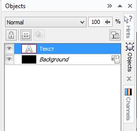
3. Далее дублируем нашу букву, нажав Ctrl + D. В докере Objects (Объекты) появится дубликат с дежурным названием Object 2 (Объект 2). С этого дубликата и «начнем плясать», чтобы наш текст был в неприкосновенности на всякий случай.
4. Теперь сделаем нечто вроде окантовки нашему тексту. Создадим сначала маску из объекта Текст, нажав Ctrl + M. Теперь нужно немного расширить маску. Дело в том, что в этой ситуации мазок кисти вдоль маски не подойдет, хотя это было бы быстрее. Выполните команду Mask > Mask Outline > Expand (Маска > Абрис маски > Расширить). В диалоговом окне Expand (Расширить), в счетчике Width (Ширина) введите значение 3 (рис. 2).
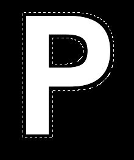
5. Теперь нам нужно залить выделенную область. Хитрость (или лучше сказать проблема) в том, что сделать это просто так не получится. Нам потребуется дополнительный объект для выполнения нашего плана. Таким дополнительным объектом может быть что угодно. Я выбрал самый простой вариант и создал обычный прямоугольник, но с размерами немного больше нашей буквы. Цвет прямоугольника значения не имеет, но лучше сделать его серым, чтобы он выделялся на черном фоне и фоне других объектов, которые появятся в дальнейшем. Этот прямоугольник будет поверх нашего Object 2 (Объекта 2). Я присвоил в докере Objects (Объекты) ему название – Прямоугольник. Вот теперь можно без проблем залить выделенную область. Для этого переключитесь на инструмент Fill (Заливка), нажав клавишу F. На Панели свойств переключитесь на Uniform (Однородную) заливку и щелкните кнопку Edit fill (Изменить заливку). В диалоговом окне Uniform Fill (Однородная заливка) выберите цвет: R: 247; G: 3; B: 0 (рис. 3).
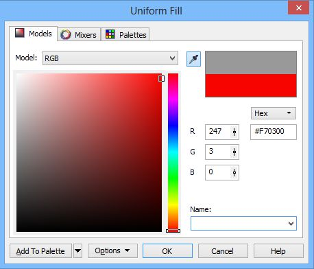
Теперь залейте выделенную область.
6. Теперь создадим объект из залитой выделенной области, нажав Ctrl + стрелка вверх. Отодвиньте всторону Прямоугольник, чтобы он не мешал. Объект Object 2 (Объект 2) перетащите в докере Objects (Объекты) на самый верх (рис. 4).
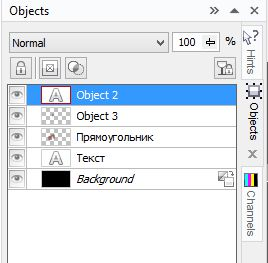
На этот момент, вы получите картинку, как на рис. 5.
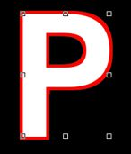
Добавим немного прозрачности красной букве, для чего щелкните в докере Objects (Объекты) на объекте Object 3 (Объект 3) правой кнопкой мыши и выберите в меню пункт Properties (Свойства). В диалоговом окне сделайте настройки, как на рис. 6.
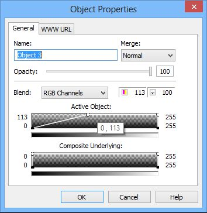
В докере Objects (Объекты) поменяйте режим наложения на Screen.
7. Снова поместите объект Прямоугольник поверх букв, а в докере Objects (Объекты) перетащите его на самый верх. Далее в докере Objects (Объекты) выделите объект Текст и создайте из него маску, нажав Ctrl + M. Выполните команду Mask > Mask Outline > Reduce (Маска > Абрис маски > Уменьшить). В диалоговом окне Reduce (Уменьшить), в счетчике Width (Ширина) введите значение 3.
8. Повторите действия, как в п. 5, но в качестве цвета заливки выберите цвет: R: 135; G: 45; B: 15. Не забудьте перед заливкой перетащить объект Прямоугольник поверх остальных объектов в докере Objects (Объекты). Теперь создадим объект из залитой выделенной области, нажав Ctrl + стрелка вверх. Отодвиньте всторону Прямоугольник, чтобы он не мешал. Получим такую картинку (рис. 7).
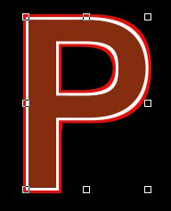
«Ситуация» в докере Objects (Объекты) показана на рис. 8.
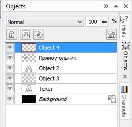
9. Выделите объект Object 2 (Объект 2) и создайте маску, нажав Ctrl + M. Залейте его цветом: R: 229; G: 194; B: 59. Объект Текст переместите в сторонку. Объект Прямоугольник можете удалить, а можете оставить, отодвинув его в сторону и переместив в докере Objects (Объекты) на самый низ. Удалите маску, нажав Ctrl + R.
10. Выделите верхний объект и выполните команду Effects > Blur > Gaussian Blur (Эффекты > Размытость > Размытость по Гауссу). В окне фильтра Gaussian Blur (Размытость по Гауссу), установите значение Radius (Радиус) равным 5. К объектам Object 2 (Объект 2) и Object 3 (Объект 3) примените размытость по Гауссу с значением Radius (Радиус) равным 3. У вас должно получиться, как на рис. 9.
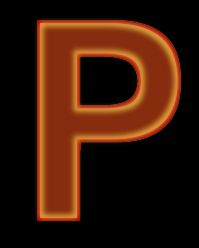
11. Теперь объедините объекты: Object 2 (Объект 2), Object 3 (Объект 3) и Object 4 (Объект 4) друг с другом. У вас получится один объект, а в докере Objects (Объекты) останется 3 объекта (рис. 10).
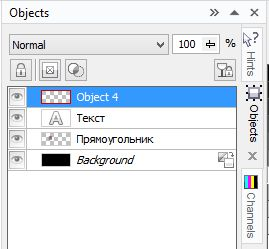
12. Создайте маску из получившегося объекта Object 4 (Объект 4), нажав Ctrl + M. Выполните команду Effects > 3D Effects > Bevel Effect (Эффекты > Трехмерные эффекты > Эффект скоса). Настройки на вкладках фильтра показаны на рис. 11 и 12.
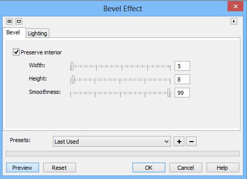
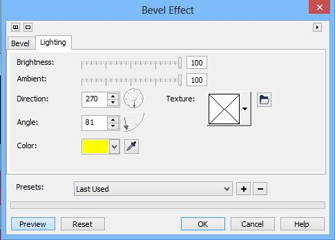
На вкладке Lightning (Освещение) был выбран желтый цвет. Получится буква, как на рис. 13.
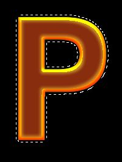
13. Так как по нашему замыслу буква должна быть горящей, то придадим ей вид, как будто она оплавилась. Но сначала удалите маску, нажав Ctrl + R. Выполните команду Effects > Distort > Displace (Эффекты > Искажение > Замещение) и установите параметры, как на рис. 14.
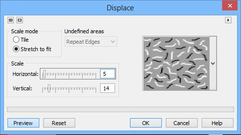
В результате буква исказится (рис. 15).
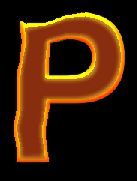
14. Наконец дошла очередь до изображения с пламенем (рис. 16). Сам файл с изображением огня находится в прикрепленных файлах.
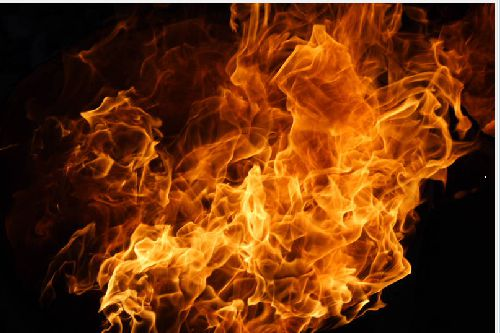
Настоятельно рекомендую работать с дубликатом или копией изображения огня. Оригинал лучше не трогать, от греха подальше. Скопируйте букву и вставьте ее в изображение с пламенем. Переместите ее в нужную место (рис. 17).
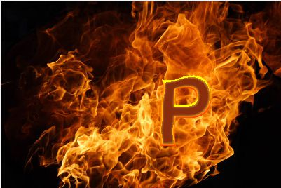
15. Щелкните в докере Objects (Объекты) на фоне и выполните команду Image > Calculations (Изображение > Вычисления). В диалоговом окне Channel Calculations (Вычисления над каналами) выберите настройки, как на рис. 18.
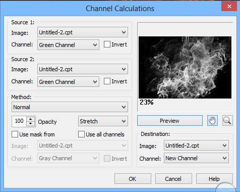
Теперь продублируйте фон, нажав Ctrl + D и скопировав его в Буфер обмена, саму же копию фона удалите. Выполните команду Mask > Load > Alpha 1 (Маска > Загрузить > Альфа 1). Инвертируйте маску и нажмите Ctrl + Shift + стрелка вверх, чтобы вырезать выделение. Получившийся в результате объект удалите. На этот момент у вас изображение будет, как на рис. 19.
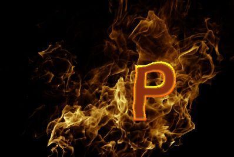
16. Возьмите Ластик и аккуратно сотрите огонь (при этом у вас должен быть выделен фон), как на рис. 20.
ВАЖНО!!! Окончательный результат зависит от того сколько огня вы оставите не стертой. Также при работе Ластиком не забудьте установить черный цвет в указателе цвета Background Color (Цвет фона), в Color control area (Области управления цветом) (под панелью инструментов).
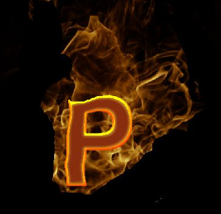
17. Вставьте из Буфера обмена скопированный ранее фон. В докере Objects (Объекты) поменяйте режим наложения на Overlay, а непрозрачность установите равной 30 %. Продублируйте 3 раза этот объект. В самой последней копии измените режим наложения на Color. В итоге получим охваченную огнем букву (рис. 21).
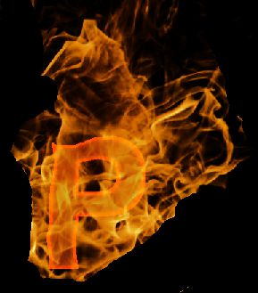
18. Объедините все объекты с фоном, а лишнюю часть фона просто обрежьте. Скопируйте букву в документ, где будете из букв набирать слова.
19. Потом скомпонуйте буквы в слова и все (рис. 22).
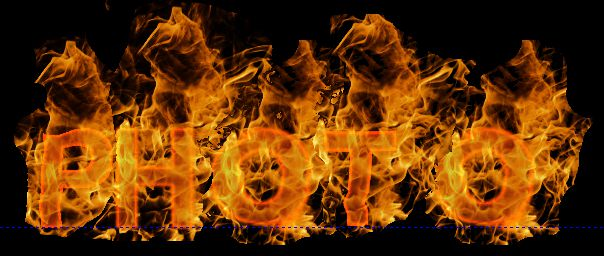
Последние замечания. Шрифт подбирайте обычный, жирный – не лучший вариант. Кроме того, значения параметров в фильтрах будут отличаться от моих, в зависимости от шрифта, размера и т. д.
К тому же при состыковке букв остатки черного фона будут накладываться друг на друга, перекрывая соседние буквы. Для того чтобы убрать эти остатки фона, используйте инструмент Color Transparency (Прозрачность цвета).
Ну и никто не мешает поэкспериментировать, чтобы получить лучший результат. В частности, можно языки пламени сделать поменьше, для чего Ластиком нужно будет стереть большую часть фона на шаге 16.
Вот например, если сделать аналогичные действия, но на шаге 15 выбрать в качестве Source 1 (Источника 1) и Source 2 (Источника 2) выбрать синий канал. К тому же стереть пламя так, чтобы оно было только вокруг букв, то можем получить такое изображение (рис. 23).
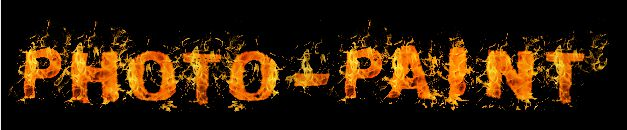
Также для различных букв может потребоваться слегка подкорректировать значения в фильтрах и выбрать другие заготовки в фильтре Displace (Замещение), а при выполнении шага 17 может потребоваться создание большего количества дубликатов пламени.
И как я уже говорил, после создания первой буквы, процесс значительно ускоряется. Например, при выполнении шага 5, вам не потребуется в дальнейшем вызывать диалоговое окно Uniform Fill (Однородная заливка) для изменения цвета заливки. Все используемые цвета будут у вас в Image Palette (Палитре документа) и вам останется только щелкать на нужном цвете правой кнопкой мыши, чтобы задать цвет заливки.
Можно поместить текст на какой-нибудь фон или текстуру, как на рис. 24.

Может лучше в CorelDRAW ?
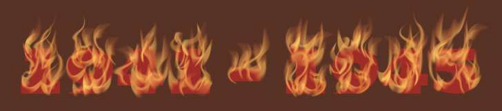
Solowejka! Можно и в Draw, это ж не вопрос :-) Просьба была сделать именно в ПП. Тем более, мне кажется, такое делать лучше (проще) в растре, чем в векторе.